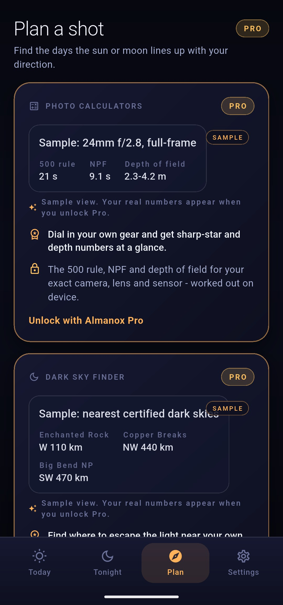

Some photographs are only possible on a handful of days each year. The Shot Planner finds them - the exact dates the sun or the full moon crosses the compass direction of your foreground, each with a time and an altitude, computed on your device for your location.
The sunrise behind the arch. The full moon over the ridge. These shots are geometry, and geometry can be searched.
Every alignment photograph is the same problem in disguise: a foreground that never moves, and a body in the sky that never stops moving. The arch sits at a fixed bearing from where you stand. The sun crosses that bearing on some days and misses it on the rest. The full moon crosses it less often still. The question is never whether the alignment happens. It is when.
The Shot Planner answers that question directly. You give it a body, a direction, and a stretch of days, and it returns every day in that window when the sun or moon crosses your chosen azimuth - each one with the exact time, the altitude at that moment, and, for the moon, its illumination. If the crossing lands at 6:42 with the sun eight degrees up, that is your shot, and now it has a date on it.
The altitude matters as much as the time. A body can cross your bearing high overhead, long after it has cleared anything you meant to frame it against. The planner reports the altitude at each crossing so you can tell a genuine behind-the-arch alignment from a technicality forty degrees up.

Three inputs, one list of dates. The planner is deliberately small.
Stand where you will shoot from, note the direction of your foreground, and set up the search:
Everything is computed on your device for your location. No account, no server, no signal required - the search works the same at a trailhead as it does at your desk.
The sun does not rise in the east. It rises somewhere east-ish, and the somewhere changes every day.
The sun's rising point migrates along the horizon through the year - northward toward the June solstice, southward toward December, sweeping an arc that widens the further you are from the equator. A bearing inside that arc gets crossed at sunrise on only a few days a year, usually in two brief passes: once as the rise point travels one way, once as it comes back. Miss the pass and the geometry is gone for months.
The pace of the drift changes too. Around the equinoxes the rise point moves fastest, and an alignment can hold for only a day or two before the sun has slid visibly along the horizon. Near the solstices it slows almost to a stop, and the same alignment can survive for a week or more. The planner absorbs all of this - it simply checks each day in your window and tells you which ones work.
The moon is faster and messier. Its rising point runs through its whole range in under a month, and its phase follows a separate cycle entirely. A full moon crossing your exact bearing at a low, frameable altitude is a coincidence of two independent rhythms, which is precisely why the results carry an illumination figure: the days when both line up are rare enough to be worth planning around.
This is what the Shot Planner is for. You cannot scout an alignment and come back sometime later - come back three weeks on and the sun rises somewhere else. The planner turns that drift into a schedule. It finds the day the sky returns to your foreground, at a time you can be standing in front of it.
The Shot Planner is part of Almanox Pro. One purchase, $12.99, no subscription - and every calculation stays on your device.